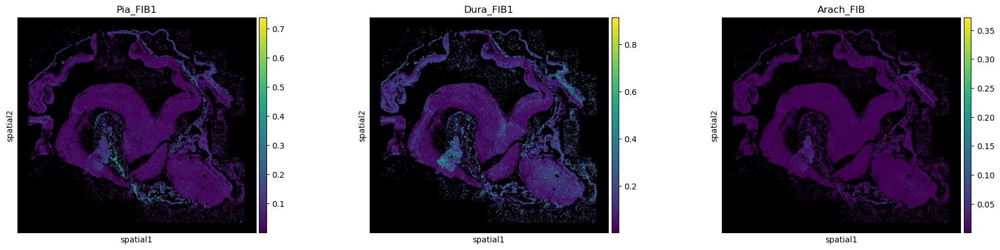
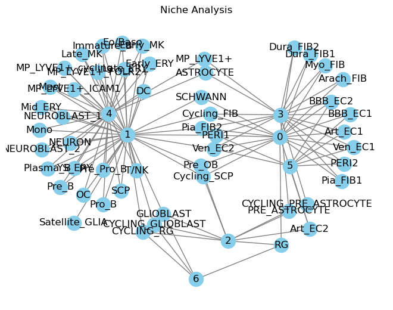

nichefinder
import sys
import logging
import pandas as pd
import scanpy as sc
import matplotlib.pyplot as plt
import seaborn as sns
%load_ext autoreload
%autoreload 2
# import importlib
sys.path.append("..")
import nichefinder as nf
# importlib.reload(nf)
logging.basicConfig(level=logging.INFO)
1) Load data
spatial
iss_ad = sc.read_h5ad("../data/C172ii_xenium_matrix.h5ad")
sc.pp.filter_cells(iss_ad, min_genes=1)
iss_ad
AnnData object with n_obs × n_vars = 152411 × 310
obs: 'cell_id', 'transcript_counts', 'control_probe_counts', 'control_codeword_counts', 'unassigned_codeword_counts', 'deprecated_codeword_counts', 'total_counts', 'cell_area', 'nucleus_area', 'region', 'cell_labels', 'n_genes'
var: 'gene_ids', 'feature_types', 'genome'
uns: 'spatialdata_attrs'
obsm: 'spatial'
sc.pp.normalize_total(iss_ad)
sc.pp.log1p(iss_ad)
iss_ad.X.min(), iss_ad.X.max(), iss_ad.raw
(np.float32(0.0), np.float32(5.081404), None)
sc.pp.neighbors(iss_ad, n_neighbors=5, use_rep='spatial')
/Users/jp30/miniforge3_use/envs/iss2niche/lib/python3.11/site-packages/tqdm/auto.py:21: TqdmWarning: IProgress not found. Please update jupyter and ipywidgets. See https://ipywidgets.readthedocs.io/en/stable/user_install.html
from .autonotebook import tqdm as notebook_tqdm
suspension
ad = sc.read_h5ad("../data/suspension_subsampled_20Sep24.h5ad")
sc.pp.filter_cells(iss_ad, min_genes=1)
ad
AnnData object with n_obs × n_vars = 10000 × 34170
obs: 'run_batch', 'run_id', 'trisomy', 'scrublet_score', 'scrublet_leiden', 'cluster_scrublet_score', 'doublet_pval', 'doublet_bh_pval', 'batch', 'pcw', 'brc_code', 'anatomical_site', 'relative_position', 'percent_mito', 'percent_ribo', 'n_counts', 'n_genes', 'n_genes_by_counts', 'total_counts', 'total_counts_mt', 'pct_counts_mt', 'total_counts_ribo', 'pct_counts_ribo', 'total_counts_hb', 'pct_counts_hb', 'QC', 'S_score', 'G2M_score', 'phase', 'batch_key', '_scvi_batch', '_scvi_labels', 'leiden_scVI', 'doublet_cls', 'annot_endo', 'annot_stroma', 'annot_schwann', 'annot_immune', 'annot_neuronal', 'annot', 'cell_type_coarse'
var: 'gene_ids-0', 'gene_ids-1', 'gene_ids-10', 'gene_ids-11', 'gene_ids-12', 'gene_ids-13', 'gene_ids-14', 'gene_ids-15', 'gene_ids-16', 'gene_ids-17', 'gene_ids-18', 'gene_ids-19', 'gene_ids-2', 'gene_ids-20', 'gene_ids-21', 'gene_ids-22', 'gene_ids-23', 'gene_ids-3', 'gene_ids-4', 'gene_ids-5', 'gene_ids-6', 'gene_ids-7', 'gene_ids-8', 'gene_ids-9', 'n_cells', 'mt', 'ribo', 'hb', 'n_cells_by_counts', 'mean_counts', 'pct_dropout_by_counts', 'total_counts', 'highly_variable', 'means', 'dispersions', 'dispersions_norm', 'highly_variable_nbatches', 'highly_variable_intersection'
uns: '_scvi_manager_uuid', '_scvi_uuid', 'anatomical_site_colors', 'annot_colors', 'brc_code_colors', 'cell_type_coarse_colors', 'dendrogram_leiden_scVI', 'doublet_cls_colors', 'hvg', 'leiden', 'leiden_scVI_colors', 'log1p', 'neighbors', 'phase_colors', 'rank_genes_groups', 'relative_position_colors', 'run_id_colors', 'trisomy_colors', 'umap'
obsm: 'X_pca', 'X_scVI', 'X_umap', 'X_umap_scVI', '_scvi_extra_categorical_covs', '_scvi_extra_continuous_covs'
obsp: 'connectivities', 'distances'
ad.X.min(), ad.X.max(), ad.raw
(np.float32(0.0), np.float32(8.310645), None)
2) Select genes
gene_sel = nf.select_genes(
suspension=ad,
spatial=iss_ad,
kind='hvg',
min_disp=0.1,
)
INFO:iss2niche.gene_selection:select 310 overlapping genes
INFO:iss2niche.gene_selection:select highly variable genes for suspension data
INFO:iss2niche.gene_selection: > number of HVG in suspension: 93
INFO:iss2niche.gene_selection:select highly variable genes for spatial data
INFO:iss2niche.gene_selection: > number of HVG in spatial: 111
INFO:iss2niche.gene_selection:number of selected genes: 46
len(gene_sel)
46
3) Transfer labels
iss_ad = nf.transfer_labels(
suspension=ad,
spatial=iss_ad,
genes=gene_sel,
labels='annot',
train_kwargs=dict(use_rep='X'),
predict_kwargs=dict(use_rep='X'),
)
INFO:iss2niche.label_transfer:subsetting to 46 genes
INFO:iss2niche.label_transfer:training logistic regression model for annot
INFO:iss2niche.label_transfer:predicting labels for annot
INFO:iss2niche.label_transfer:46 features used for prediction
INFO:iss2niche.label_transfer:compiling results
INFO:iss2niche.label_transfer:adding predicted labels for annot to spatial dataset
nf.add_prob_to_obs(iss_ad, 'annot')
AnnData object with n_obs × n_vars = 152411 × 310
obs: 'cell_id', 'transcript_counts', 'control_probe_counts', 'control_codeword_counts', 'unassigned_codeword_counts', 'deprecated_codeword_counts', 'total_counts', 'cell_area', 'nucleus_area', 'region', 'cell_labels', 'n_genes', 'annot', 'ASTROCYTE', 'Arach_FIB', 'Art_EC1', 'Art_EC2', 'BBB_EC1', 'BBB_EC2', 'CYCLING_GLIOBLAST', 'CYCLING_PRE_ASTROCYTE', 'CYCLING_RG', 'Cycling_FIB', 'Cycling_SCP', 'DC', 'Dura_FIB1', 'Dura_FIB2', 'Early_ERY', 'Early_MK', 'Eo/Baso', 'GLIOBLAST', 'Immature_B', 'Late_ERY', 'Late_MK', 'MP_LYVE1+', 'MP_LYVE1+_FOLR2+', 'MP_LYVE1+_ICAM1', 'MP_LYVE1+_cycling', 'Mast', 'Mid_ERY', 'Mono', 'Myo_FIB', 'NEUROBLAST_1', 'NEUROBLAST_2', 'NEURON', 'OC', 'PERI1', 'PERI2', 'PRE_ASTROCYTE', 'Pia_FIB1', 'Pia_FIB2', 'Plasma_B', 'Pre_B', 'Pre_OB', 'Pre_Pro_B', 'Pro_B', 'RG', 'SCHWANN', 'SCP', 'Satellite_GLIA', 'T/NK', 'Ven_EC1', 'Ven_EC2', 'YS_ERY'
var: 'gene_ids', 'feature_types', 'genome'
uns: 'spatialdata_attrs', 'log1p', 'neighbors', 'label_transfer'
obsm: 'spatial', 'annot_prob'
obsp: 'distances', 'connectivities'
iss_ad.obs['annot'].value_counts()
annot
NEURON 73581
Dura_FIB1 18539
RG 18229
NEUROBLAST_1 11992
ASTROCYTE 7129
GLIOBLAST 5084
Myo_FIB 4676
Pia_FIB1 2721
Dura_FIB2 2427
Pia_FIB2 2237
Art_EC2 1536
CYCLING_GLIOBLAST 1440
NEUROBLAST_2 1311
Cycling_FIB 604
PERI2 385
MP_LYVE1+ 82
Late_ERY 65
Early_MK 57
BBB_EC2 53
PERI1 50
Mono 38
Ven_EC1 36
Late_MK 26
YS_ERY 23
BBB_EC1 19
T/NK 19
CYCLING_RG 12
Early_ERY 11
Arach_FIB 11
Ven_EC2 7
Satellite_GLIA 4
Cycling_SCP 3
Mid_ERY 2
CYCLING_PRE_ASTROCYTE 1
PRE_ASTROCYTE 1
Name: count, dtype: int64
plot labels
logging.basicConfig(level=logging.INFO)
sc.pl.spatial(iss_ad, color='annot', spot_size=20)
... storing 'annot' as categorical
with plt.rc_context({'axes.facecolor': 'black'}):
sc.pl.spatial(iss_ad, color=['Pia_FIB1', 'Dura_FIB1', 'Arach_FIB'], spot_size=20)

4) Analyse niches
aggregate neighborhoods
agg_prob = nf.aggregate_neighbors(
spatial=iss_ad,
label='annot',
)
sns.clustermap(agg_prob, figsize=(15,15))
<seaborn.matrix.ClusterGrid at 0x1654be390>

find niches
n_clusters, membership, _ = nf.find_niches(agg_prob, plot=True, n_clusters=7)
INFO:iss2niche.niche_analysis:calculate reconstruction errors for 10 clusters
/Users/jp30/miniforge3_use/envs/iss2niche/lib/python3.11/site-packages/sklearn/decomposition/_nmf.py:1759: ConvergenceWarning: Maximum number of iterations 1000 reached. Increase it to improve convergence.
warnings.warn(
INFO:iss2niche.niche_analysis:ploting reconstruction error

plot niches
niches as graph with cutoff
nf.plot_niches(
membership=membership,
threshold=0.5,
scale=None,
)

niches as heatmap
sns.clustermap(membership.T, figsize=(15,5), cmap='viridis')
<seaborn.matrix.ClusterGrid at 0x158492310>
niches next to clustered matrix of aggregated neighbors
nf.plot_aggregated_neighbors(
agg_prob,
membership,
figsize=(15,14),
colors_ratio=.0125,
)